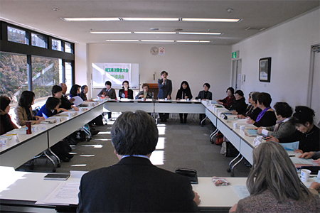

11月19日（水）午前10時30分より、埼玉県県民健康センターの中会議室で開催されました。当日は、実行委員会参加19団体30人が出席しました。
■議題
1．埼玉県との懇談会について
当日午後におこなわれる、県との懇談会について、進行、県担当部局と実行委員会の参加者、質疑応答のすすめ方を確認しました。
2．大会のまとめと次年度の大会について
（1）全体会・分科会について振り返り、参加者数、今大会の決算（見込み）、当日のアンケートのまとめを確認して、感想や意見を話し合いました。
（2）第50回大会報告集と記念誌の発行について確認しました。大会報告集を12月中～下旬発行、記念誌については12月下旬発行します。大会報告集の各団体希望数を事務局で集約します。
（3）次回、第51回埼玉県消費者大会実行委員会への引継事項を確認しました。第50回大会実行委員会より第51回大会運営体制として以下の方が推薦され、引継を確認しました。
■第51回埼玉県消費者大会運営体制（＊敬称略）
実行委員長
廣田 美子（さいたま市消費者団体連絡会）
副実行委員長
川上 豊子（埼玉母親大会連絡会）
事務局長
岩岡 宏保（埼玉県消費者団体連絡会）
事務局
加藤 一彦（埼玉県消費者団体連絡会）
あわせて第51回大会日程と会場を確認しました。
- 開催日
- 2015年9月25日（金）
- 会 場
- 埼玉会館 大・小ホール・会議室
3．お知らせ
事務局より以下についてお知らせしました。
（1）2014年度県内消費者団体地区別交流会案内）
今年度の地区別交流会を県内3会場で開催します。埼玉県委託事業として開催され、今年度は、改正消費者安全法に基づく地域の見守りネットワークや地域連携をすすめるための学習と交流をおこないます。
- □西部地区（川越会場）2015年1月20日（火）
- 場所：東上パールビルジング
- □北部地区（熊谷会場）2015年1月28日（水）
- 場所：熊谷市男女共同参画推進センター
- □東部地区（春日部会場）2015年2月5日（木）
- 場所：春日部市民文化会館
（2）2014年度関東ブロック 地方消費者グループ・フォーラム（一次）
平成22年度から今年で5回目となる、消費者庁主催「地方消費者グループ・フォーラム（関東ブロック）」案内。
- 日時：
- 2015年2月19日（木）10：30～15：15
- 会場：
- 栃木県総合文化センター（定員200名）
- 主催：
- 消費庁、グループ・フォーラム（関東ブロック）実行委員会
（3）埼玉消費者被害をなくす会「消費者力アップ学習会」案内
□消費者力アップ学習会Vol.2
「こんな広告にご用心！」～正しい広告の見方～
日時：12月22日（月）10：00～12：00
場所：浦和コミュニティセンター第13集会室
4．2014年度埼玉県市町村消費者行政調査
「2014年度県内市町村消費生活関連事業調査」結果を踏まえてすすめている、市町村消費者行政担当部局との懇談について、埼玉消団連事務局より開催状況報告されました。
5．第6回実行委員会報告
事務局より文書報告されました。